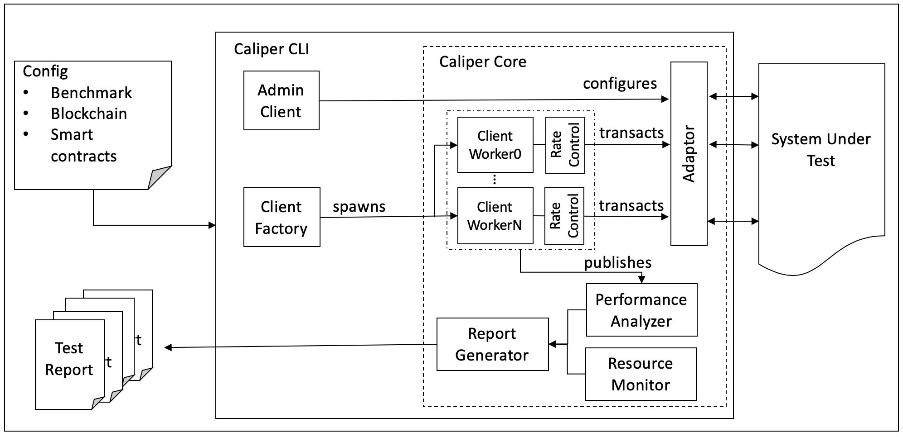
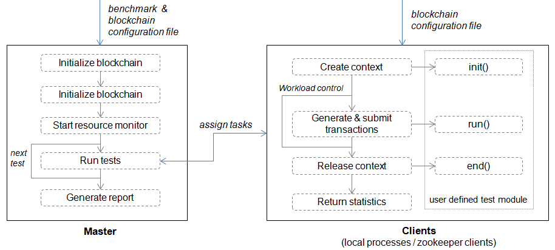
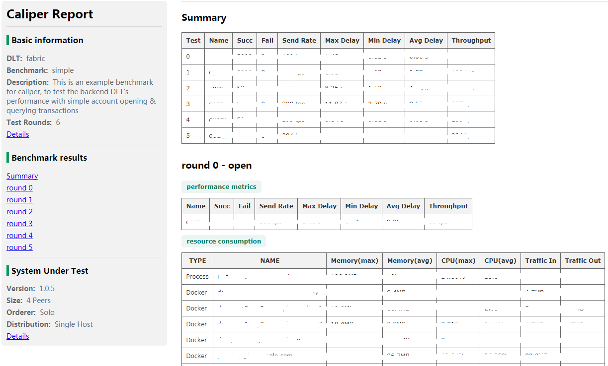

Architecture(CH)

Adaptation Layer(适配层)
适配层用于将现有的区块链系统集成到Caliper框架中。每个适配器使用相应的区块链SDK或RESTful API实现’Caliper Blockchain NBI’。目前支持Hyperledger Fabric1.0-1.4、Sawtooth、Iroha、composer和burrow。Caliper后续将实现对以太坊和其他区块链系统的支持。
Interface&Core Layer（接口及核心层）
接口和核心层提供 Blockchain NBI、资源监控、性能监控、报告生成模块，并为上层应用提供四种相应的北向接口：
- Blockchain operating interfaces: 包含诸如在后端区块链上部署智能合约、调用合约、从账本查询状态等操作。
- Resource Monitor: 包含启动/停止监视器和获取后端区块链系统资源消耗状态的操作，包括CPU、内存、网络IO等。现在提供两种监视器，一种是监视本地/远程docker容器，另一种则是监控本地进程。未来将实现更多功能。
- Performance Analyzer: 包含读取预定义性能统计信息（包括TPS、延迟、成功交易数等）和打印基准测试结果的操作。在调用区块链北向接口时，每个交易的关键指标（如创建交易的时间、交易提交时间、交易返回结果等）都会被记录下来，并用于生成最终的预定义性能指标统计信息。
- Report Generator: 生成HTML格式测试报告。
Application Layer(应用层)
应用程序层包含针对典型区块链方案实施的测试。每次测试都需要设置对应的配置文件，用于定义后端区块链网络信息和测试参数信息。基于这些配置，可以完成区块链系统的性能测试。
我们预置了一个默认的基准测试引擎以帮助开发人员理解框架并快速实施自己的测试。下面将介绍如何使用基准测试引擎。当然，开发人员也可以不使用测试框架，直接使用NBI完成自有区块链系统的测试。
Benchmark Engine¶

Configuration File¶
我们使用两种配置文件。一种是基准配置文件，它定义基准测试参数，如负载量（workload）等。另一种是区块链网络配置文件，它指定了有助于与待测试的系统（SUT）交互的必要信息。
以下是基准配置文件示例:
test:
name: simple
description: This is an example benchmark for caliper
clients:
type: local
number: 5
rounds:
- label: open
txNumber:
- 5000
- 5000
- 5000
rateControl:
- type: fixed-rate
opts:
tps: 100
- type: fixed-rate
opts:
tps: 200
- type: fixed-rate
opts:
tps: 300
arguments:
money: 10000
callback: benchmark/simple/open.js
- label: query
txNumber:
- 5000
- 5000
rateControl:
- type: fixed-rate
opts:
tps: 300
- type: fixed-rate
opts:
tps: 400
callback" : benchmark/simple/query.js
monitor:
type:
- docker
- process
docker:
name:
- peer0.org1.example.com
- http://192.168.1.100:2375/orderer.example.com
process:
- command: node
arguments: local-client.js
multiOutput: avg
interval: 1
-
test - 定义测试的元数据和指定工作负载下的多轮测试。
- name&description: 测试名及其描述，该信息会被报告生成器使用，并显示在测试报告中。
- clients: 定义客户端类型和相关参数，其中’type’应该设置为’local’。
- local: 此例中，Caliper的主进程将会创建多个子进程，每个子进程将会作为客户端向后端区块链系统发送交易。客户端的数量由’number’定义。
- label: 当前测试标签名称。例如，可以使用当前交易目的名称（如开户）作为标签名称，来说明当前性能测试的交易类型。该值还可用作blockchain.getContext()中的Context名称。又例如，开发人员可能希望测试不同Fabric通道的性能，在这种情况下，具有不同标签的测试可以绑定到不同的Fabric通道。
- txNumber: 定义一个子轮测试数组，每个轮次有不同的交易数量。例如, [5000,400] 表示在第一轮中将生成总共5000个交易，在第二轮中将生成400个交易。
- txDuration: 定义基于时间测试的子轮数组。例如 [150,400] 表示将进行两次测试，第一次测试将运行150秒，第二次运行将运行400秒。如果当前配置文件中同时指定了txNumber和txDuration，系统将优先根据txDuration设置运行测试。
- rateControl: 定义每个子轮测试期间使用的速率控制数组。如果未指定，则默认为“固定速率”，将以1TPS速率发送交易开始测试。如果已定义，务必保证所选用的速率控制机制名称正确并且提供对应的发送速率及所需参数。在每一轮测试中, txNumber 或 txDuration 在 rateControl 中具有相应的速率控制项。有关可用速率控制器以及如何实现自定义速率控制器的更多信息，请参阅 速率控制部分。
- trim: 对客户端结果执行修剪（trim）操作，以消除warm-up和cool-down阶段对于测试结果的影响。如果已指定修剪区间，该设置将被应用于该轮测试结果的修剪中。例如, 在
txNumber测试模式中，值30表示每个客户端发送的最初和最后的30个交易结果将被修剪掉; 在txDuration模式下, 则从每个客户端发送的前30秒和后30秒的交易结果将会被忽略掉。 - arguments: 用户自定义参数，将被传递到用户自定义的测试模块中。
- callback: 指明用户在该轮测试中定义的测试模块。请参阅
User defined test module获取更多信息。
-
monitor - 定义资源监视器和受监视对象的类型，以及监视的时间间隔。
- docker : docker monitor用于监视本地或远程主机上的指定docker容器。Docker Remote API用于检索远程容器的统计信息。保留的容器名称“all”表示将监视主机上的所有容器。在上面的示例中，监视器将每秒检索两个容器的统计信息，一个是名为“peer0.org1.example.com”的本地容器，另一个是位于主机’192.168.1.100’上的名为“orderer.example.com”的远程容器。2375是该主机上Docker的侦听端口。
- process : 进程监视器用于监视指定的本地进程。例如，用户可以使用此监视器来监视模拟区块链客户端的资源消耗。’command’和’arguments’属性用于指定进程。如果找到多个进程，’multiOutput’属性用于定义输出的含义。’avg’表示输出是这些过程的平均资源消耗，而’sum’表示输出是总和消耗。
- others : 待后续补充。
Master¶
实现默认测试流程，其中包含三个阶段：
-
准备阶段：在此阶段，主进程使用区块链配置文件创建并初始化内部区块链对象，按照配置中指定的信息部署智能合约，并启动监控对象以监控后端区块链系统的资源消耗。
-
测试阶段: 在此阶段，主进程根据配置文件执行测试，将根据定义的workload生成任务并将其分配给客户端子进程。最后将存储各个客户端返回的性能统计信息以供后续分析。
-
报告阶段: 分析每个测试轮次的所有客户端的统计数据，并自动生成HTML格式报告。报告示例如下:

Clients¶
Local Clients¶
在此模式下，主进程使用Node.js集群模块启动多个本地客户端（子进程）来执行实际的测试工作。由于Node.js本质上是单线程的，因此本地集群可用于提高客户端在多核机器上的性能。
此模式下，总工作负载被平均分配给子进程。每个子进程相当于区块链客户端，子进程拥有临时生成的context，可以和后端区块链系统交互。context通常包含客户端的标识和加密信息，在测试结束后context将被释放。
- 对于Hyperledger Fabric，context也绑定到特定channel，该绑定关系在Fabric配置文件中有相关定义。
测试时客户端将调用用户定义的测试模块，该模块包含了自定义的测试逻辑。测试模块的相关信息后文会给出解释。
本地客户端在第一轮测试时启动，并在完成所有测试后被销毁。
User Defined Test Module¶
该模块实现交易生成和提交交易的功能。通过这种方式，开发人员可以实现自己的测试逻辑并将其与基准引擎集成。 测试模块主要实现3个函数，所有这些函数都应该返回一个Promise对象。
init- 将在每个测试轮次开始时由客户端调用。所需参数包括当前区块链对象、上下文以及从基准配置文件中读取的用户定义的参数。在该函数内可以保存区块链对象和context供以后使用，其他初始化工作也可在此处实现。run- 应使用Caliper的区块链API在此处生成和提交实际的事务。客户端将根据工作负载重复调用此函数。建议每次调用只提交一个事务；如果每次提交多个事务，则实际工作负载可能与配置的工作负载不同。请确保该函数应以异步方式运行。end- 将在每轮测试结束时调用，任何结束时需要释放信息的工作都应在此处执行。